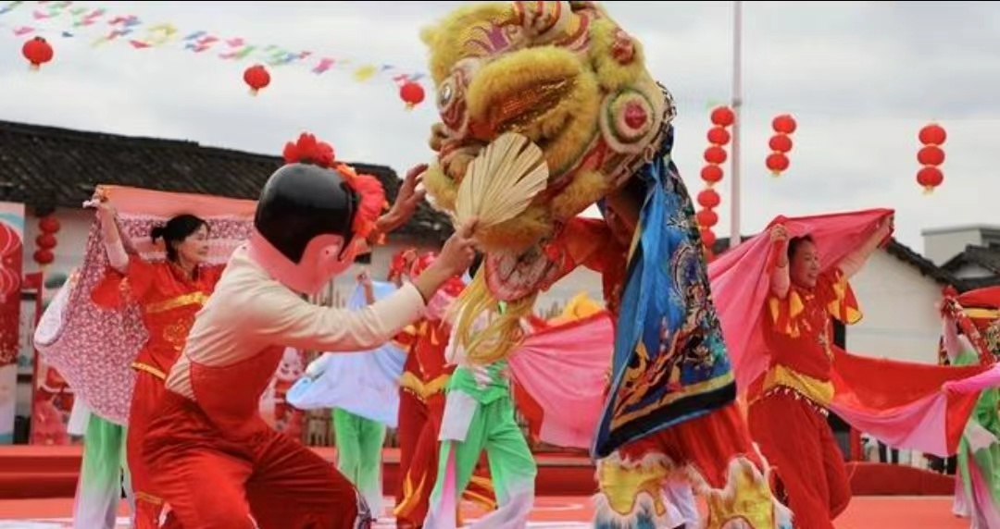

舞被狮

舞被狮活动起源于清朝初年，有400多年历史。 每年从正月初六上灯开始至正月十六日， 村中上年添男丁和新娶媳妇的家庭均参加舞被狮活动。 特别是正月十五元宵节和十六两天， 围镇村的祠堂内外人头涌涌，热闹非凡。 在锣鼓声中，只见场中一群妇女，在一头醒狮的带领下， 两人一组手举被子、扭动身子，奔奔跑跑， 像传统舞狮子一样在玩耍，只不过龙套是被子而不是醒狮。 文革期间，舞被狮活动一度停止，改革开放后又兴盛起来。
豆腐节

豆腐节的起源大约在公元1609年， 那年正月十三， 林氏村民在祠堂上灯吃斋时， 一位村民无意中将豆腐弄到另一位村民身上， 引起了一场豆腐仗。第二年参加上年豆腐仗的村民又喜添男丁， 村民们认为是豆腐仗带来的人丁兴旺， 此后每年正月十三给祠堂上灯时都由丁头组织打豆腐仗， 至今已经发展成全村老少全部参与的豆腐节。
抢花炮
每年农历正月初九，水头墟万人空巷，各乡民众都来抢花炮。 纸扎艺人所扎的花炮，通常有两人多高，上缀许多“公仔”，分为“丁财贵福禄寿”六个花炮。 到抢花炮当日，把有编号的铜环放入“地墩”(在生铁筒内冲实火药,点燃引火线即炸响的一种炮)。 点花炮开始时，“隆”一声，铜环被射上高空，百姓争着捡抢，拾得铜环者，按编号赢得一尊花炮， 众人迎回村中祠堂供奉。